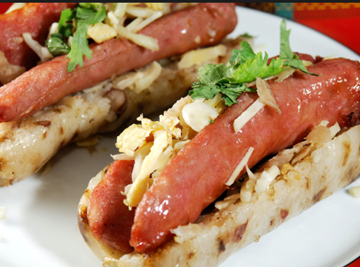
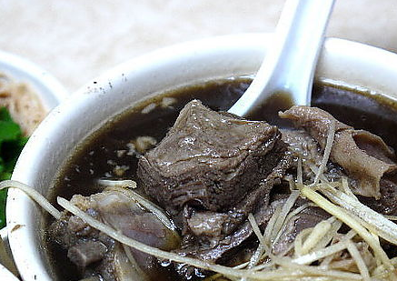
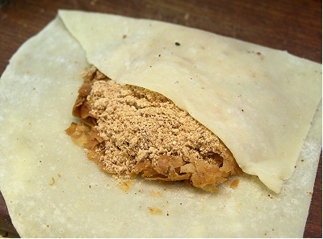
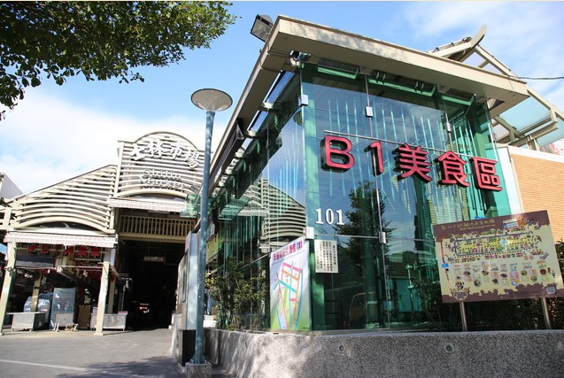
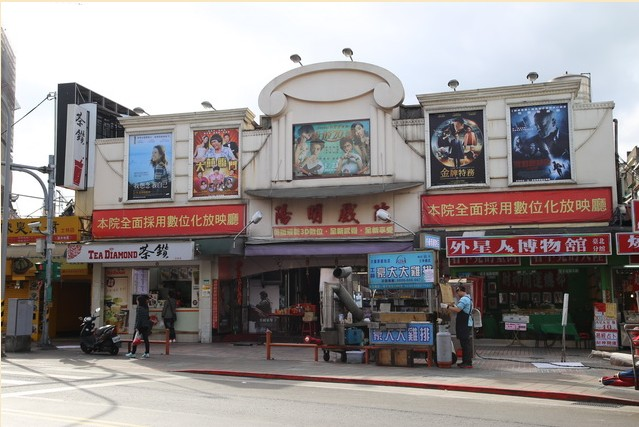
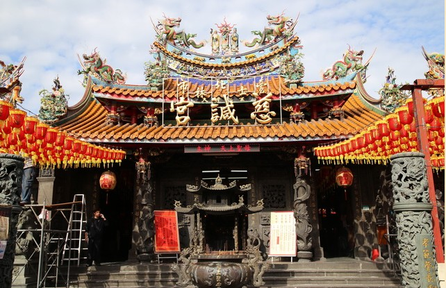

士林夜市為臺北市最具規模的夜市之一，以陽明戲院及慈誠宮為中心，包含了文林路、大東路、大南路等熱鬧街市集結而成，其中士林市場早在民國前二年即已興建，以各種傳統小吃聞名國內外，許多觀光客皆慕名而來，像是大餅包小餅、石頭火鍋或是士林大香腸等，更是已經成為美食地標，無人不曉。
台北景點 - 非來不可旅
1, 12, 2016



士林夜市美食介紹6大有名美食
- 藥燉排骨
- 大腸包小腸
- 大餅包小餅
- 士林香腸
- 蚵仔煎
- 泡泡冰
士林夜市的範圍相當廣泛，從劍潭捷運站到陽明戲院一直延伸到大南路的慈誠宮，選擇性更多樣，可以吃到嘴酸。


可以邊看戲院邊吃美食
士林夜市台北必去夜市

慈盛宮被列為三級古蹟，建於1769年，是當地信仰中心。